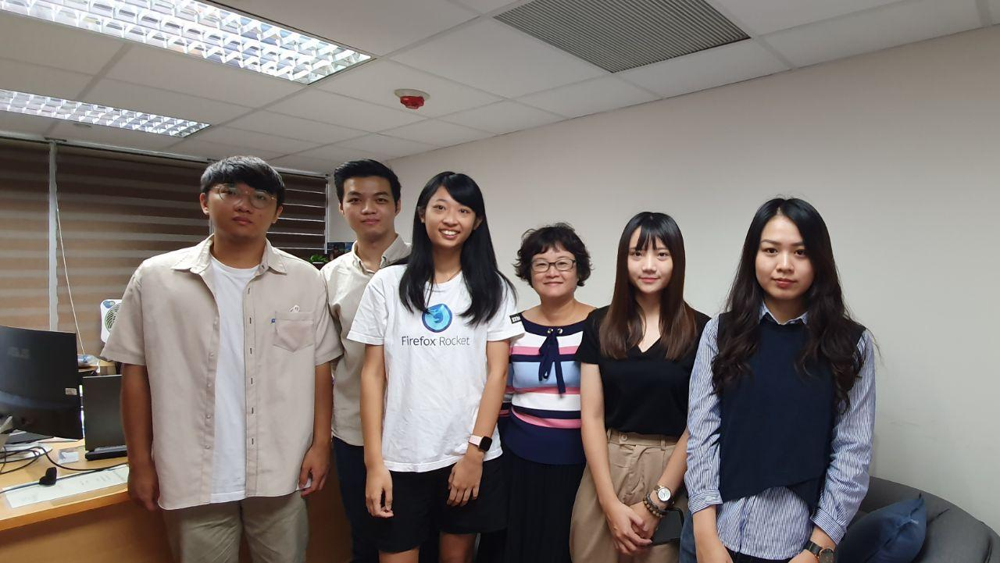

艾菲克特 (Efekt)，取英文諧音 I Fact，Efekt 在波蘭文是影響的意思，也代表著我們希望能夠將正面的影響散發出去。因為角色定位是偵探，所以在 LOGO 上我們也採用偵探的形象，雙眼上所畫的 fact and fake 以及瞄準十字，也代表我們透過了聰慧的雙眼精準的鎖定了假資訊。
我們是一群關注假新聞議題的學生，因近年來網路日益發達，假資訊產出的速度遠遠高於人工查核的速度，而許多民眾困擾於假資訊，也包括我們，因此我們決定研究這個專題，改變以往人工查核的模式，將既有資訊整理後即時提供民眾參考，並且將整合後的數據回饋給 g0v 零時政府的提案 cofact 真的假的，希望可以藉此有效打擊假資訊，提高民眾辨識假資訊的能力。